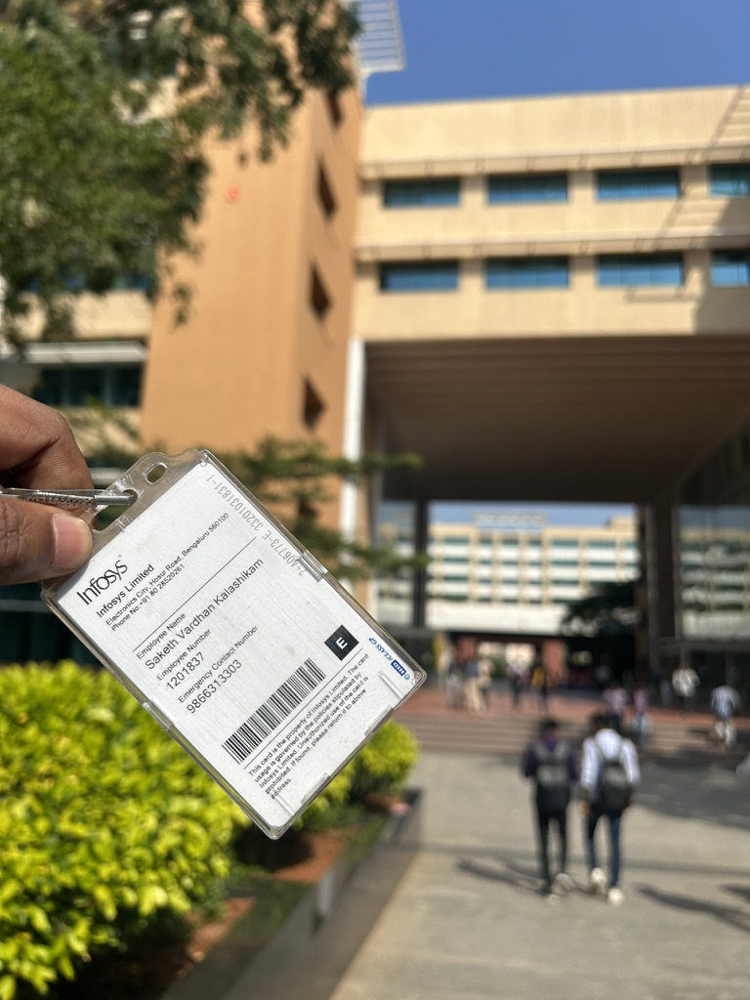

May,2024 - Present(2025) Tempe, Arizona
HR Systems & Recruitment Analytics Assistant - Arizona State University
Improved HRIS data accuracy to 95% by standardizing job roles and automating validation.
Built interactive Tableau dashboards and Excel models to accelerate hiring decisions by 30%.
Automated multi-platform job postings via API integrations and delivered SQL-based analytics reports.
Enhanced applicant engagement by 25% through data-driven recruitment strategies.
December,2021 - December,2023 Hyderabad, India

Software Engineer – Infosys
Engineered backend systems using .NET and SQL, optimizing Azure pipelines to reduce latency by 40%.
Built and maintained CI/CD workflows with Azure DevOps, improving deployment speed and system uptime.
Debugged SQL issues in cloud-based platforms, ensuring full data integrity in production systems.
Created and tested robust REST APIs using Postman, contributing to high SLA compliance.
Operated in Agile sprints, resolving production issues and boosting overall system performance.
July,2021 - December,2021 Hyderabad, India
Software Engineer Intern – Infosys
Developed a C#/.NET-based sensor-integrated automotive repository, cutting interface lag by 30%.
Refactored code and built unit tests, reducing live system bugs by 45% and improving code quality.
Utilized Entity Framework Core to enhance SQL data access layers, improving response times by 40%.
Conducted error analysis to improve system stability and streamline debugging workflows.
Played a key role in stabilizing and completing legacy modules within a tight delivery schedule.
January,2024 - Present(2025) Tempe, Arizona
Arizona State University
Master’s in Information Technology | CGPA: 4.00
July,2017 - July,2021 Hyderabad, India
CVR College of Engineering, JNTU
Bachelor’s in Mechanical Engineering | GPA: 8.03/10
Programming Languages
Java, Python, SQL, C, C#, .NET, Java Script
Technologies
MangoDB, AWS (EC2, S3, RDS, Lambda, VPC, IAM), Azure DevOps, Apache Spark, PySpark, Scala, MySQL, React.js, ASP. NET Core,
REST APIs, HTML, CSS, Data Visualization, Advanced DBMS, Risk Management, User Interface Design, Advance Big data, Natural Language Toolkit,
Efficient NLP processing, Machine Learning, Artificial Intelligence
Tools
VS Code, IntelliJ, Postman, Microsoft Excel, Microsoft Office, Spyder, Azure Pipelines, Cloud Security, Network Security, Cloud
Fundamentals, Power BI, Cloud Architecture & Design, AWS Cloud Services, Machine Learning for NLP